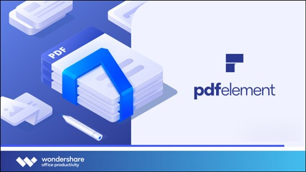

Multilingual | 32bit/64bit | MacOS | PreActivated Wondershare PDFelement Pro v9.3.2 (OCR) Multilingual MacOS PDFelement - The easiest way to create, edit, convert, and sign PDF documents. We're now introducing the all-new PDFelement , which includes a redesigned UI, more advanced writing tools, improved team collaboration features, more powerful conversion tools, a user management console, and more. *** PDFelement Pro *** - Includes all features in PDFelement Standard - OCR (Exclusive in Pro version) - OCR （Optical Character Recognition）enables you to edit and convert characters in scanned PDF files or pictures - Supports recognition of 29 languages - Create & Sign Forms (Exclusive in Pro version) - Create fillable PDF Forms from interactive field objects, such as buttons, check boxes, radio buttons, list boxes, and drop-down lists - Support adding digital signatures to forms - Merge PDF (Exclusive in Pro version) - Combine different format files into a new PDF - Convert PDF (Exclusive in Pro version) - Supports converting PDF file to a greater number of output formats like EPUB, HTML, Text, RTF - PDF/A (Exclusive in Pro version) - Support PDF/A as an available output format with ISO Standard for long term archiving - Batch Processing of PDF Files (Exclusive in Pro version) - Process PDFs in batches - Add backgrounds, watermarks, headers and footers in batches - Bates Numbering (Exclusive in Pro version) - Apply Bates Numbering with advanced formatting - Redact PDF (Exclusive in Pro version) - Redact sensitive text and images in PDFs What's New: - https://pdf.wondershare.com/contest/pdfelement-7-release.html System Requirements: - macOS 10.14 or later Homepage: https://pdf.wondershare.com/ Run predone setup, install & Enjoy, No activation required / Instruction is Included in the folder! AntiVirus Scanned Result for User-End >>> No Virustotal due to file size limited - It's clean no harm!